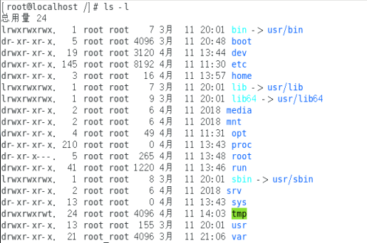

关机
不管是重启系统还是关闭系统，首先要运行 sync 命令，把内存中的数据写到磁盘中。
sync 将数据由内存同步到硬盘中。
1 | sync # 将数据由内存同步到硬盘中。 |
切换用户
root用户切换到普通用户：
1 | su - 用户名 |
普通用户切换到root用户:
1 | su |
系统目录结构
登录系统后，在当前命令窗口下输入命令：
1 | ls / |
树状目录结构：（Linux的一切资源都挂载在这个 / 根节点下）

以下是对这些目录的解释：
- /bin：bin是Binary的缩写, 这个目录存放着最经常使用的命令。
- /boot： 这里存放的是启动Linux时使用的一些核心文件，包括一些连接文件以及镜像文件。
- /dev ： dev是Device(设备)的缩写, 存放的是Linux的外部设备，在Linux中访问设备的方式和访问文件的方式是相同的
- /etc： 这个目录用来存放所有的系统管理所需要的配置文件和子目录。
- /home：用户的主目录，在Linux中，每个用户都有一个自己的目录，一般该目录名是以用户的账号命名的
- /lib：这个目录里存放着系统最基本的动态连接共享库，其作用类似于Windows里的DLL文件。
- /lost+found：这个目录一般情况下是空的，当系统非法关机后，这里就存放了一些文件。
- /media：linux系统会自动识别一些设备，例如U盘、光驱等等，当识别后，linux会把识别的设备挂载到这个目录下。
- /mnt：系统提供该目录是为了让用户临时挂载别的文件系统的，我们可以将光驱挂载在/mnt/上，然后进入该目录就可以查看光驱里的内容了。
- /opt：这是给主机额外安装软件所摆放的目录。比如你安装一个ORACLE数据库则就可以放到这个目录下。默认是空的。
- /proc：这个目录是一个虚拟的目录，它是系统内存的映射，我们可以通过直接访问这个目录来获取系统信息。
- /root：该目录为系统管理员，也称作超级权限者的用户主目录。
- /sbin：s就是Super User的意思，这里存放的是系统管理员使用的系统管理程序。
- /srv：该目录存放一些服务启动之后需要提取的数据。
- /sys：这是linux2.6内核的一个很大的变化。该目录下安装了2.6内核中新出现的一个文件系统 sysfs 。
- /tmp：这个目录是用来存放一些临时文件的。
- /usr：这是一个非常重要的目录，用户的很多应用程序和文件都放在这个目录下，类似于windows下的program files目录。
- /usr/bin： 系统用户使用的应用程序。
- /usr/sbin： 超级用户使用的比较高级的管理程序和系统守护程序。
- /usr/src： 内核源代码默认的放置目录。
- /var：这个目录中存放着在不断扩充着的东西，我们习惯将那些经常被修改的目录放在这个目录下。包括各种日志文件。
- /run：是一个临时文件系统，存储系统启动以来的信息。当系统重启时，这个目录下的文件应该被删掉或清除。
绝对路径和相对路径
Linux的目录结构为树状结构，最顶级的目录为根目录 /。
其他目录通过挂载可以将它们添加到树中，通过解除挂载可以移除它们。
绝对路径
路径的写法，由根目录 / 写起，例如：/usr/share/doc 这个目录。
相对路径
路径的写法，不是由 / 写起，例如由 /usr/share/doc 要到 /usr/share/man 底下时，可以写成：cd ../man 这就是相对路径的写法。
处理目录的常用命令
- ls: 列出目录
- cd：切换目录
- pwd：显示目前的目录
- mkdir：创建一个新的目录
- rmdir：删除一个空的目录
- cp: 复制文件或目录
- rm: 移除文件或目录
- mv: 移动文件与目录，或修改文件与目录的名称
可以使用 man [命令] 来查看各个命令的使用文档，如 ：man cp
ls （列出目录）
语法：
1 | [root@localhost ~]# ls [-aAdfFhilnrRSt] 目录名称 |
选项与参数：
- -a ：全部的文件，连同隐藏文件( 开头为 . 的文件) 一起列出来(常用)
- -l ：长数据串列出，包含文件的属性与权限等等数据；(常用)
将目录下的所有文件列出来(含属性与隐藏档)
1 | [root@localhost ~]# ls -al ~ |
cd （切换目录）
cd是Change Directory的缩写，这是用来变换工作目录的命令。
语法：
1 | cd [相对路径或绝对路径] |
测试：
1 | # 切换到用户目录下 |
pwd ( 显示目前所在的目录 )
pwd 是 Print Working Directory 的缩写，也就是显示目前所在目录的命令。
1 | [root@localhost /]#pwd [-P] |
选项与参数：
- -P ：显示出确实的路径，而非使用连接(link) 路径。
测试：
1 | # 单纯显示出目前的工作目录 |
mkdir （创建新目录）
如果想要创建新的目录的话，那么就使用mkdir (make directory)吧。
1 | mkdir [-mp] 目录名称 |
选项与参数：
- -m ：配置文件的权限喔！直接配置!
- -p ：帮助你直接将所需要的目录(包含上一级目录)递归创建起来！
测试：
1 | # 进入我们用户目录下 |
rmdir ( 删除空的目录 )
语法：
1 | rmdir [-p] 目录名称 |
选项与参数：
- -p ：连同上一级『空的』目录也一起删除
测试：
1 | # 可直接删除掉，没问题 |
注意：这个 rmdir 仅能删除空的目录，你可以使用 rm 命令来删除非空目录！
cp ( 复制文件或目录 )
语法：
1 | [root@localhost ~]# cp [-adfilprsu] 来源档(source) 目标档(destination) |
选项与参数：
- -a：相当於 -pdr 的意思，至於 pdr 请参考下列说明；(常用)
- -p：连同文件的属性一起复制过去，而非使用默认属性(备份常用)；
- -d：若来源档为连结档的属性(link file)，则复制连结档属性而非文件本身；
- -r：递归持续复制，用於目录的复制行为；(常用)
- -f：为强制(force)的意思，若目标文件已经存在且无法开启，则移除后再尝试一次；
- -i：若目标档(destination)已经存在时，在覆盖时会先询问动作的进行(常用)
- -l：进行硬式连结(hard link)的连结档创建，而非复制文件本身。
- -s：复制成为符号连结档 (symbolic link)，亦即『捷径』文件；
- -u：若 destination 比 source 旧才升级 destination ！
测试：
1 | # 找一个有文件的目录，我这里找到 root目录 |
rm ( 移除文件或目录 )
语法：
1 | rm [-fir] 文件或目录 |
选项与参数：
- -f ：就是 force 的意思，忽略不存在的文件，不会出现警告信息
- -i ：互动模式，在删除前会询问使用者是否动作
- -r ：递归删除啊！最常用在目录的删除了！这是非常危险的选项！！！
测试：
1 | # 将刚刚在 cp 的实例中创建的 install.sh删除掉！ |
mv ( 移动文件与目录，或修改名称 )
语法：
1 | [root@localhost ~]# mv [-fiu] source destination |
选项与参数：
- -f ：force 强制的意思，如果目标文件已经存在，不会询问而直接覆盖；
- -i ：若目标文件 (destination) 已经存在时，就会询问是否覆盖！
- -u ：若目标文件已经存在，且 source 比较新，才会升级 (update)
测试：
1 | # 复制一个文件到当前目录 |
基本属性
Linux系统是一种典型的多用户系统，不同的用户处于不同的地位，拥有不同的权限。为了保护系统的安全性，Linux系统对不同的用户访问同一文件（包括目录文件）的权限做了不同的规定。
在Linux中我们可以使用ll或者ls –l命令来显示一个文件的属性以及文件所属的用户和组，如：

在Linux中第一个字符代表这个文件是目录、文件或链接文件等等：
- 当为[ d ]则是目录
- 当为[ - ]则是文件
- 若是[ l ]则表示为链接文档 ( link file )
- 若是[ b ]则表示为装置文件里面的可供储存的接口设备 ( 可随机存取装置 )
- 若是[ c ]则表示为装置文件里面的串行端口设备，例如键盘、鼠标 ( 一次性读取装置 )
接下来的字符中，以三个为一组，且均为『rwx』 的三个参数的组合。
其中，[ r ]代表可读(read)、[ w ]代表可写(write)、[ x ]代表可执行(execute)。
要注意的是，这三个权限的位置不会改变，如果没有权限，就会出现减号[ - ]而已。
每个文件的属性由左边第一部分的10个字符来确定（如下图）：

第0位确定文件类型，第1-3位确定属主（该文件的所有者）拥有该文件的权限。第4-6位确定属组（所有者的同组用户）拥有该文件的权限，第7-9位确定其他用户拥有该文件的权限。
修改文件属性
chgrp：更改文件属组
语法：
1 | chgrp [-R] 属组名 文件名 |
- -R：递归更改文件属组，就是在更改某个目录文件的属组时，如果加上-R的参数，那么该目录下的所有文件的属组都会更改。
chown：更改文件属主，也可以同时更改文件属组
语法：
1 | chown [–R] 属主名 文件名 |
chmod：更改文件9个属性
语法：
1 | chmod [-R] xyz 文件或目录 |
Linux文件属性有两种设置方法，一种是数字，一种是符号。
Linux文件的基本权限就有九个，分别是owner/group/others三种身份各有自己的read/write/execute权限。
文件的权限字符为：『-rwxrwxrwx』， 这九个权限是三个三个一组的！其中，我们可以使用数字来代表各个权限，各权限的分数对照表如下：
1 | r:4 w:2 x:1 |
每种身份(owner/group/others)各自的三个权限(r/w/x)分数是需要累加的，例如当权限为：[-rwxrwx—-] 分数则是：
- owner = rwx = 4+2+1 = 7
- group = rwx = 4+2+1 = 7
- others= —- = 0+0+0 = 0
1 | chmod 770 filename |
文件内容查看
Linux系统中使用以下命令来查看文件的内容：
- cat 由第一行开始显示文件内容
- tac 从最后一行开始显示，可以看出 tac 是 cat 的倒着写！
- nl 显示的时候，顺道输出行号！
- more 一页一页的显示文件内容
- less 与 more 类似，但是比 more 更好的是，他可以往前翻页！
- head 只看头几行
- tail 只看尾巴几行
cat
语法：
1 | cat [-AbEnTv] |
选项与参数：
- -A ：相当於 -vET 的整合选项，可列出一些特殊字符而不是空白而已；
- -b ：列出行号，仅针对非空白行做行号显示，空白行不标行号！
- -E ：将结尾的断行字节 $ 显示出来；
- -n ：列印出行号，连同空白行也会有行号，与 -b 的选项不同；
- -T ：将 [tab] 按键以 ^I 显示出来；
- -v ：列出一些看不出来的特殊字符
测试：
1 | # 查看网络配置: 文件地址 /etc/sysconfig/network-scripts/ |
tac
tac与cat命令刚好相反，文件内容从最后一行开始显示，可以看出 tac 是 cat 的倒着写！如：
1 | [root@localhost ~]# tac /etc/sysconfig/network-scripts/ifcfg-eth0 |
nl
语法：
1 | nl [-bnw] 文件 |
选项与参数：
- -b ：指定行号指定的方式，主要有两种：-b a ：表示不论是否为空行，也同样列出行号(类似 cat -n)；-b t ：如果有空行，空的那一行不要列出行号(默认值)
- -n ：列出行号表示的方法，主要有三种：-n ln ：行号在荧幕的最左方显示；-n rn ：行号在自己栏位的最右方显示，且不加 0 ；-n rz ：行号在自己栏位的最右方显示，且加 0
- -w ：行号栏位的占用的位数
测试：
1 | [root@localhost ~]# nl /etc/sysconfig/network-scripts/ifcfg-eth0 |
more
在 more 这个程序的运行过程中，你有几个按键可以按的：
- 空白键 (space)：代表向下翻一页
- Enter ：代表向下翻『一行』
- /字串 ：代表在这个显示的内容当中，向下搜寻『字串』这个关键字
- :f ：立刻显示出档名以及目前显示的行数
- q ：代表立刻离开 more ，不再显示该文件内容
- b 或 [ctrl]-b ：代表往回翻页，不过这动作只对文件有用，对管线无用
1 | [root@localhost etc]# more /etc/csh.login |
less
less运行时可以输入的命令有：
- 空白键 ：向下翻动一页
- [pagedown]：向下翻动一页
- [pageup] ：向上翻动一页
- /字串 ：向下搜寻『字串』的功能
- ?字串 ：向上搜寻『字串』的功能
- n ：重复前一个搜寻 (与 / 或 ? 有关！)
- N ：反向的重复前一个搜寻 (与 / 或 ? 有关！)
- q ：离开 less 这个程序
1 | [root@localhost etc]# more /etc/csh.login |
head
语法：
1 | head [-n number] 文件 |
选项与参数：-n 后面接数字，代表显示几行的意思！
默认的情况中，显示前面 10 行！若要显示前 20 行，就得要这样：
1 | [root@localhost etc]# head -n 20 /etc/csh.login |
tail
语法：
1 | tail [-n number] 文件 |
选项与参数：
- -n ：后面接数字，代表显示几行的意思
默认的情况中，显示最后 10 行！若要显示最后 20 行，就得要这样：
1 | [root@localhost etc]# tail -n 20 /etc/csh.login |
Linux 链接概念
Linux 链接分两种，一种被称为硬链接（Hard Link），另一种被称为符号链接（Symbolic Link）。
ln 命令产生硬链接。
硬连接
硬连接指通过索引节点来进行连接。在 Linux 的文件系统中，保存在磁盘分区中的文件不管是什么类型都给它分配一个编号，称为索引节点号(Inode Index)。在 Linux 中，多个文件名指向同一索引节点是存在的。比如：A 是 B 的硬链接（A 和 B 都是文件名），则 A 的目录项中的 inode 节点号与 B 的目录项中的 inode 节点号相同，即一个 inode 节点对应两个不同的文件名，两个文件名指向同一个文件，A 和 B 对文件系统来说是完全平等的。删除其中任何一个都不会影响另外一个的访问。
硬连接的作用是允许一个文件拥有多个有效路径名，这样用户就可以建立硬连接到重要文件，以防止“误删”的功能。其原因如上所述，因为对应该目录的索引节点有一个以上的连接。只删除一个连接并不影响索引节点本身和其它的连接，只有当最后一个连接被删除后，文件的数据块及目录的连接才会被释放。也就是说，文件真正删除的条件是与之相关的所有硬连接文件均被删除。
软连接
另外一种连接称之为符号连接（Symbolic Link），也叫软连接。软链接文件有类似于 Windows 的快捷方式。它实际上是一个特殊的文件。在符号连接中，文件实际上是一个文本文件，其中包含的有另一文件的位置信息。比如：A 是 B 的软链接（A 和 B 都是文件名），A 的目录项中的 inode 节点号与 B 的目录项中的 inode 节点号不相同，A 和 B 指向的是两个不同的 inode，继而指向两块不同的数据块。但是 A 的数据块中存放的只是 B 的路径名（可以根据这个找到 B 的目录项）。A 和 B 之间是“主从”关系，如果 B 被删除了，A 仍然存在（因为两个是不同的文件），但指向的是一个无效的链接。
测试
1 | [root@localhost /]# cd /home |
从上面的结果中可以看出，硬连接文件 f2 与原文件 f1 的 inode 节点相同，均为 397247，然而符号连接文件的 inode 节点不同。
1 | # echo 字符串输出 >> f1 输出到 f1文件 |
通过上面的测试可以看出：当删除原始文件 f1 后，硬连接 f2 不受影响，但是符号连接 f1 文件无效。
结论：
- 删除符号连接f3,对f1,f2无影响；
- 删除硬连接f2，对f1,f3也无影响；
- 删除原文件f1，对硬连接f2没有影响，导致符号连接f3失效；
- 同时删除原文件f1,硬连接f2，整个文件会真正的被删除。
This is copyright.